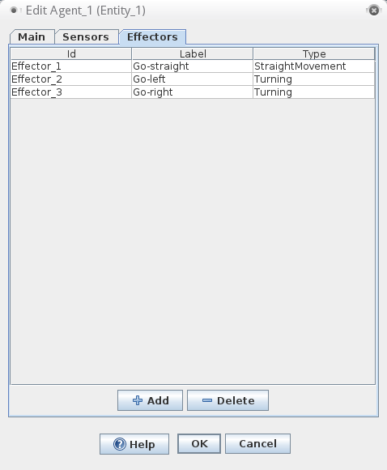
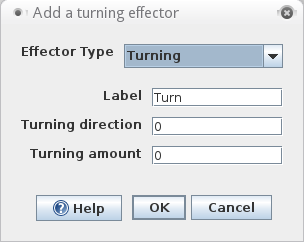
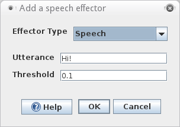

Effectors
An agent in Odor World has effectors that it (currently) uses to move and speak. Effectors are coupled with output neurons in neural networks. When neurons activate an agent's effectors, it performs the action associated with the effector, either moving, turning, or making an utterance.
To display an agent's effectors, double click on the agent in Odor World and select the effectors tab. The effector panel lists all of an agent's effectors along with its effector type and label. Labels can be renamed by double clicking on the label column.

To edit an effector, right click on any part of the row and select "Edit effector..."
Labels can be renamed by double clicking on the label column.
To delete an effector, select all the effectors to be deleted in the list and click on the "Delete" button at the bottom of the panel.
To add an effector, click on the "Add" button at the bottom of the panel. Then, select the effector type and input the appropriate parameters.
The different types of effectors in Odor World are described below.
A straight effector moves the agent straight forward in Odor World. As long as the neuron coupled with the effector is active, the agent will continue to try to move directly forward in Odor World. The distance that the agent moves per time step is the product of the activation in the neuron and the base movement amount.

Base movement amount:Determines the distance in pixels that the agent moves when this effector is activated.
This effector controls changes in an agent's heading. When a turning effector is activated, the turning direction and amount are multiplied and the product is added to the agent's current heading. By default left and right turning effectors are provided. If a new turning effector is added it is up to the user to make the label match what the effector does.

Turning direction:Determines the direction of that the agent turns to. A positive value makes the agent left. A negative value makes the agent turn right. Any number besides 1 or -1 will also scale the amount of the turning. Basically a scalar multiplied times turning amount to determine change in an agent's heading.
Turning amount:Determines how much the agent turns in the turning direction.
When a speech effector is activated, it stimulates any hearing sensor an agent with a matching utterance value.

Utterance:The string or phrase associated with this effector. A hearing effector gets activated when it senses a speech effector of the same utterance.
Threshold:An amount which must be exceeded for the effector to be activated. When coupled to a neuron, the neuron must have a value above this for the speech effector gets activated.
Output Commands
Output Commands are essentially the motor controls of the agent. When coupling a neuron to an agent, one can choose between two styles of movement: relative movement, and absolute movement. Relative movements are motor commands that tell the agent how to move relative to its current orientation: e.g. move forward or to the right. Absolute movements tell the agent to move in directions that are independent of its orientation, such as move to the north or to the south-west. See Attributes to set the visibility of absolute movements.
All movements are scaled based on the activity of the coupled neuron and a fixed movement factor (one for moving straight, one for turning) set in the entity dialog. The larger the activation, the faster the agent. If a neuron is coupled with an agent and its activation becomes negative, the neuron will command the agent to do the opposite of what it would normally do. This is such that when a neuron that normally turns the agent right becomes negative, it will instead start telling the agent to turn left.
Coupling of Output Commands
This section describes how to couple networks to agents.
Before selecting an Output Command, one must first select an agent. If there are multiple agents, one must differentiate between agents by their name, which can be changed in the dialog of that particular agent. Otherwise they are given default names "Agent 1," "Agent 2," etc. Once an agent as been highlighted, another popup menu will appear with the following output commands:
North, South, East, West, North-east, North-west, South-east, South-west. These move the creature in absolute directions.
Left, Right, Forward, Backward.. These move the creature relative to its orientation. These are particularly useful for programming AI.
Some effector-like entity attributes that are invisible by default in the attribute visibility panel of the coupling manager (on the consumer side) are its x and y location, and "Absolute movement." The latter can be used to move an agent in North, South, West, and East; The former can be used to move the agent to specific locations; in both cases as the result of neuron activations. They are thus a kind of effector, though they cannot be explicitly added in the effector panel.